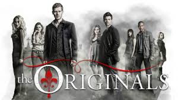

The Originals
2013 ‧ Drama ‧ 5 temporadas

The Originals é uma série de TV americana que conta a história dos irmãos Mikaelson, os vampiros originais, que retornam a Nova Orleans.
The Originals é uma série de TV americana que conta a história dos irmãos Mikaelson, os vampiros originais, que retornam a Nova Orleans.